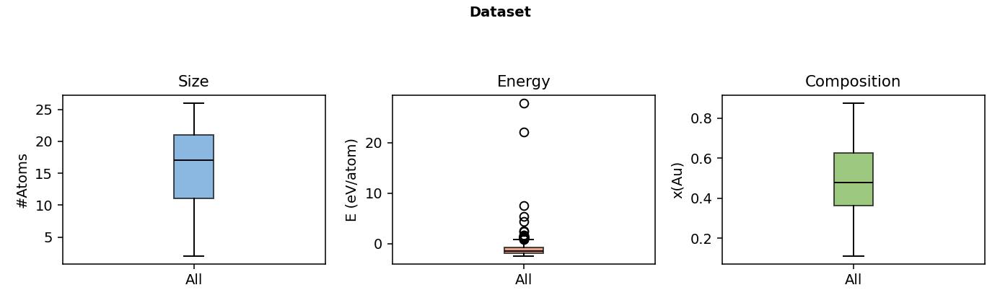
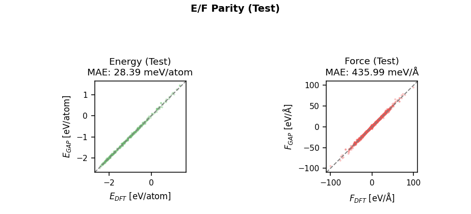
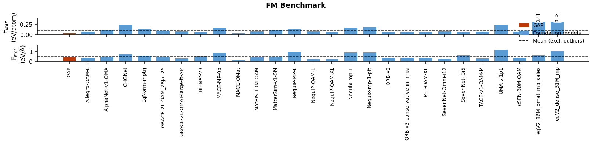

Ag–Au
← Back to Periodic Table
Basic Information
System
Ag–Au
Type
Binary Alloy Nanocluster
Constituent Elements
Ag, Au

▦
Dataset (Atom Count / Energy / Composition)
Target: 1386×420px (figsize 9.9×3.0 @ 140dpi)

▦
Energy / Force Parity (Test Set)
Target: 924×420px (figsize 6.6×3.0 @ 140dpi)

▦
GAP vs. Foundation Models (Binary Test)
new
Target: 1610×387px (figsize 11.5×2.77 @ 140dpi)
Model
GAP File